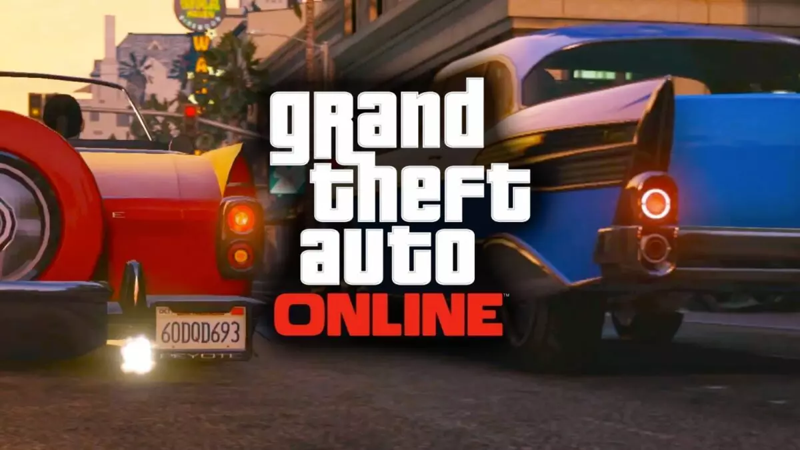

GTA 5
Grand Theft Auto 5 is een actie-avonturenspel dat in een open wereld in zowel de derde als de eerste persoon kan worden gespeeld. First Person is alleen beschikbaar op pc, Playstation 4 en Xbox One. Spelers kunnen het spel verkennen door te rennen, springen, zwemmen, vliegen of een voertuig besturen. Tijdens het spel kan de speler verschillende missies voltooien om de plot van het spel vooruit te helpen. Deze missies zijn echter optioneel en kunnen ook wereldwijd worden gespeeld. Als een speler illegaal gedrag vertoont in het spel, kan hij sterren krijgen. Deze sterren geven een 'wanted level' aan. Je kunt maximaal 5 sterren met 1 ster als het laagste aantal en 5 sterren als het hoogste aantal. Dit geldt ook voor de andere GTA games.
Personages
In tegenstelling tot eerdere games in de Grand Theft Auto-serie, heeft GTA 5 drie personages die de speler kan besturen. Michael De Santa, Trevor Philips en Franklin Clinton. Deze drie hoofdpersonages kunnen tussen missies worden gewisseld en kunnen tijdens bepaalde missies ook van tijd tot tijd worden gewisseld. Elk personage heeft specialisaties (ook wel speciale vaardigheden genoemd) die de gameplay

GTA 5 Online
Op 1 oktober 2013 bracht Rockstar Games Grand Theft Auto Online uit, een multiplayer-variant van Grand Theft Auto 5 die door maximaal 16 spelers tegelijk kan worden gespeeld op PlayStation 3 en Xbox 360, PlayStation 4. Op pc en Xbox One kun je met maximaal 30 spelers in een online sessie spelen. De lancering verliep niet vlekkeloos. Veel spelers over de hele wereld hebben problemen gehad om toegang te krijgen tot de gameservers en in sommige gevallen zijn alle persoonlijke prestaties gewist. Rockstar Games kondigde toen aan dat het alle spelers van het spel zou vergoeden voor een geldelijke donatie van $ 500.000 (in-game) op voorwaarde dat spelers het spel in oktober 2013 speelden.
